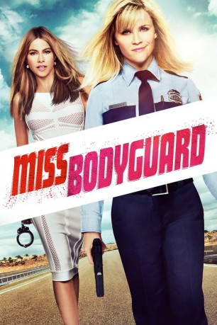

gesehen am 20.10.2015
gesehen am 20.10.2015Alternativ: Hot Pursuit gesehen am 20.10.2015
 
 IMDB-Wertung: 5.1 / 10
IMDB-Wertung: 5.1 / 10  Metascore:
Metascore: 
Polizistin Cooper macht ihre Arbeit gut, ist aber noch unerfahren. Noch nie bot sich ihr die Gelegenheit, bei einem Außeneinsatz zu zeigen, was sie drauf hat. Eines Tages sieht sie jedoch endlich ihre langersehnte Chance gekommen, als sie eine wichtige Zeugin zum Gericht nach Dallas eskortieren soll. Besagte Dame, Daniella, soll gegen den Kartell-Boss Vicente Cortez aussagen – und der hat viele weitere Zeugen bereits erfolgreich aus dem Weg geräumt. Doch schon bei der Abholung der Zeugin läuft alles schief: Das Kartell mischt sich ein, Daniellas Ehemann wird erschossen und schon machen sich die beiden Frauen in einem Fluchtwagen aus dem Staub, verfolgt von aufgebrachten Gangstern, nicht minder erbosten Polizisten wie den Detectives Dixon und Hauser sowie jeder Menge anderer Gestalten, die hinter der schönen Witwe her sind...
Jahr: 2015
Dauer: 87 Minuten
FSK: 12
Land: USA Studio: Warner Bros.Tonspuren: DD5.1 - ,
Untertitel: Deutsch,
Auflösung: 1080p (1920x800) Größe: 7823 MB
Regisseur: Anne Fletcher
Drehbuch: David Feeney, John Quaintance
Soundtrack: Christophe Beck
Darsteller:
 Reese Witherspoon als Cooper
Reese Witherspoon als Cooper Sofía Vergara als Daniella Riva
Sofía Vergara als Daniella Riva Michael Mosley als Detective Dixon
Michael Mosley als Detective Dixon Robert Kazinsky als Randy
Robert Kazinsky als Randy Richard T. Jones als Detective Jackson
Richard T. Jones als Detective Jackson Benny Nieves als Jesus
Benny Nieves als Jesus Joaquín Cosio als Vicente Cortez
Joaquín Cosio als Vicente Cortez John Carroll Lynch als Captain Emmett
John Carroll Lynch als Captain Emmett Jim Gaffigan als Red
Jim Gaffigan als Red Mike Birbiglia als Steve
Mike Birbiglia als Steve Vincent Laresca als Felipe Riva
Vincent Laresca als Felipe Riva David Jensen als Wayne
David Jensen als Wayne Marcus Lyle Brown als Lou
Marcus Lyle Brown als Lou Kim Collins als Pudgy Guy
Kim Collins als Pudgy Guy Anne Fletcher als Dispatch Operator
Anne Fletcher als Dispatch Operator Oscar Gale als Bodyguard
Oscar Gale als Bodyguard Jaylen Moore als Rookie
Jaylen Moore als Rookie Carol Sutton als Brenda
Carol Sutton als Brenda Zachary Woodlee als Choreographer
Zachary Woodlee als Choreographer Bryce Romero als Cooper's Prom Date
Bryce Romero als Cooper's Prom Date Jerome Andries als Special Agent , uncredited
Jerome Andries als Special Agent , uncredited Michael D. Anglin als Special Agent , uncredited
Michael D. Anglin als Special Agent , uncredited John L. Armijo als Older Native American Man , uncredited
John L. Armijo als Older Native American Man , uncredited Tom Bui als Federal Officer , uncredited
Tom Bui als Federal Officer , uncredited Janet Lynn Carey als Jaywalker , uncredited
Janet Lynn Carey als Jaywalker , uncredited Divine Prince Ty Emmecca als Court House Mob Protest Scene , uncredited
Divine Prince Ty Emmecca als Court House Mob Protest Scene , uncredited Geraldine Glenn als Quinceañera Guest , uncredited
Geraldine Glenn als Quinceañera Guest , uncredited Christopher Heskey als State Trooper , uncredited
Christopher Heskey als State Trooper , uncredited Mark Kubr als Bar Patron #2 , uncredited
Mark Kubr als Bar Patron #2 , uncredited Justin Lebrun als Driver , uncredited
Justin Lebrun als Driver , uncreditedDatei: X:\2015(G-M)\Miss Bodyguard (2015, FSK12, 1920x800).mkv seit 20.10.2015
Festplatte: HD 2015(A-Z)
 Es gibt insgesamt 129 Filme in der Gruppe '2015(G-M)'
Es gibt insgesamt 129 Filme in der Gruppe '2015(G-M)'